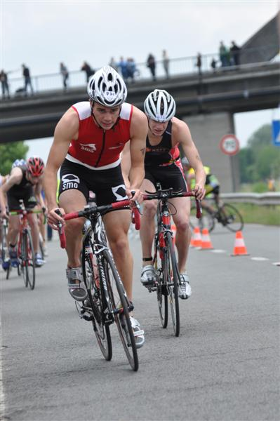

Zondag 31 mei heb ik deelgenomen aan het BK jeugtriatlon te Zwevegem. Ik stond zeer ontspannen en zelfzeker aan de start, klaar om er een goeie westrijd van te maken. Na een goeie zwemproef kwam ik als 3e uit het water. Op de fiets werd er meteen stevig rondgedraaid en kreeg ik het zwaar maar ik bleef me goed aan de groep vastklampen. Twee ronden bleven we jacht maken op de koplopers maar het verschil bleef constant. Daarna verslapte het tempo wat maar op een winderig parcours is dat zeer relatief. Ik heb afgezien op de fiets maar ik denk dat iedereen wel dat gevoel had! Het lopen was het minste van de drie, mijn loopniveau is nog niet super na een lange blessure. Ik kwam als 12e junior over de streep. Hopelijk gaat het met de conditie vanaf nu in stijgende lijn!
Na de wedstrijd zag ik Jan Mombaerts en die was ook tevreden over zijn wedstrijd.
Dit weekend stond ik aan de start in l'Eau d'Heure en heb een vierde plaats behaald bij de juniores. Ik was heel tevreden want ik kon na een tijd van kwetsuren eens zonder pijn lopen.
En nu: focussen op... mijn examens!